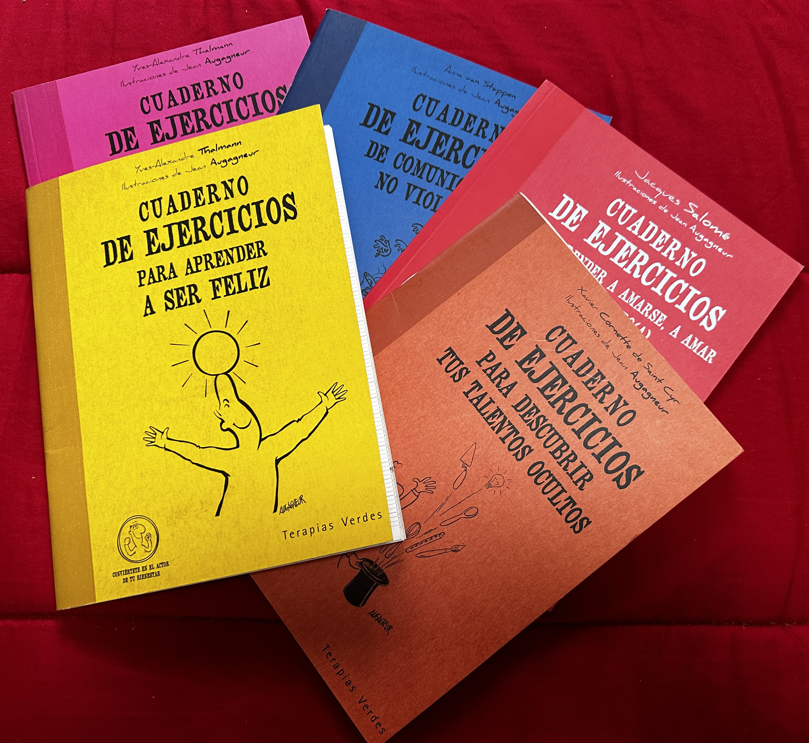
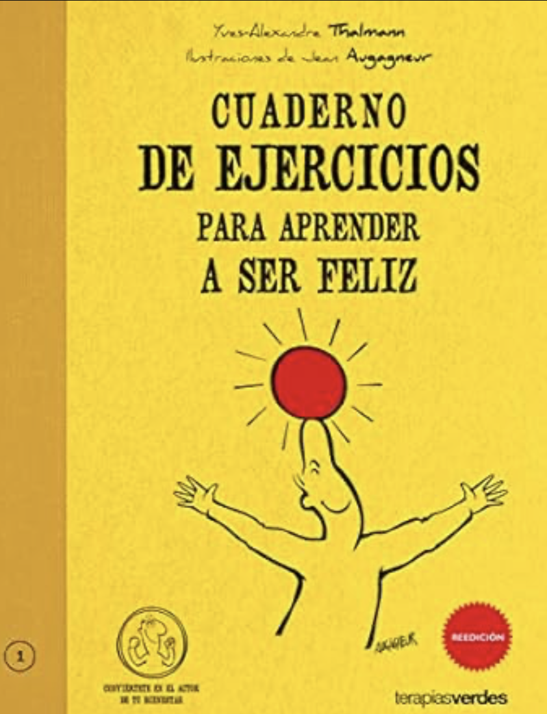
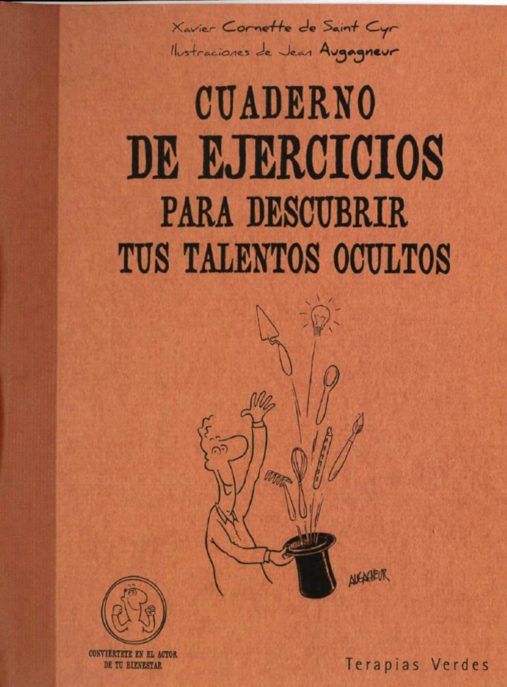
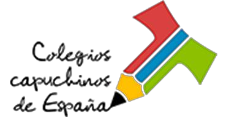

¡Bienvenidos a la remodelación de Palabras para crecer!
¡BIENVENIDOS AL ITINERARIO PALABRAS PARA CRECER!
CUADERNOS DE EJERCICIOS

Sed bienvenidos a la remodelación de materiales de Palabras para crecer. Esperamos que esta remodelación sea de vuestro agrado.
A lo largo de dos años, se realizarán ocho sesiones: cuatro por año.
El primer año se dedicará a la reflexión y a realizar el cuaderno de ejercicios Para Aprender a Ser Feliz.

El segundo: Descubrir tus talentos ocultos

Pinchando sobre cada pestaña, verás una posible propuesta para cada cuadernillo.
IMPORTANTE: Recordamos que cada guía ha de adaptar según su grupo esta propuesta.
Lo importante es que cada grupo tenga un momento de encuentro, de cercanía, de fraternidad.
